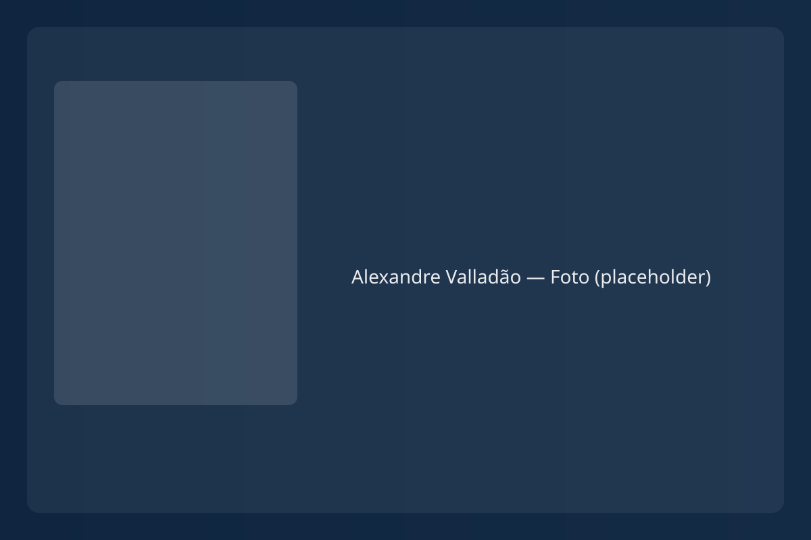

"O Valladão abriu meu horizonte na guitarra. Curso maravilhoso." Fernando Magalhães
Alexandre Valladão apresenta
GUITARRA MASTER
A maior jornada musical da sua vida. Desenvolva sua impressão digital.
Destrave sua improvisação e domine a harmonia do Blues ao Jazz usando apenas 2 esquemas fundamentais.
Garantir Minha Vaga
Promoção de lançamento: cadastre-se e ganhe acesso imediato a 4 aulas gratuitas do Minicurso Starter.
Comece Agora sem Pagar Nada
Libere 4 aulas gratuitas e veja sua técnica evoluir em poucos dias.
- Aula 1: O segredo das escalas Country e Blues.
- Aula 2: Técnica de palhetada e sincronia das mãos.
- Aula 3: Bends, vibratos, glissandos e staccatos.
- Aula 4: Fraseados para improvisar e contar uma história.
O Que é o Guitarra Master?
Um curso com 126 videoaulas e mais de 50 horas de conteúdo prático, dividido em 7 níveis progressivos.
- Aprenda a improvisar com fluência e tirar músicas de ouvido.
- Ganhe autonomia harmônica e pare de depender apenas de decoreba.
- Vá das tríades até acordes de 11ª e 13ª com clareza.
- Receba PDFs, tablaturas e backing tracks profissionais.
Por que o Guitarra Master é diferente?
Baseado no consagrado método de Gaetano Galifi, o professor Alexandre Valladão mostra como simplificar o braço da guitarra a partir de apenas 2 esquemas. A proposta é desenvolver a sua própria impressão digital musical.
Para quem é este curso?
- Iniciantes a partir de 7 anos que querem uma fundação sólida.
- Guitarristas travados ou autodidatas que querem entender harmonia.
- Baixistas e outros instrumentistas interessados em harmonia funcional.

Depoimentos
"Ele é um professor excelente e vocês têm muita coisa para aprender com ele." Roberto Frejat
"Abriu muito a minha cabeça sobre o braço da guitarra e os modos gregos." Otávio Rocha
"Sua percepção de harmonia e melodia ajudou na minha carreira inteira." Sandro Lustosa
Dê o próximo passo na sua jornada musical.
Condição de lançamento com garantia de 7 dias.
Quero Ser um Guitarra Master